VitaSync UX/UI Case Study
A health companion app concept that supports medication management, doctor appointments, and patient–provider communication for individuals living with chronic health conditions.
SOEN 357 — Winter 2026
Introduction
Managing a chronic illness is a daily responsibility that requires consistency, organization, and mental clarity. Many people still rely on disjointed tools such as paper notes, calendar alerts, or separate apps.
VitaSync is designed as a health companion that centralizes medication tracking, appointment scheduling, and doctor communication. The goal is to reduce cognitive load and build confidence in everyday health management.
Understanding the Challenge
Chronic care requires managing repetitive routines with little margin for error. Fragmented systems increase the risk of missed doses and forgotten appointments. Many existing apps focus on only one feature, forcing users to switch between platforms. VitaSync aims to unify key health tasks in one calm, accessible experience.
Research Method
I researched how people manage chronic conditions on a daily basis through surveys and casual interviews. Many rely on disconnected systems (paper notes, alarms, multiple apps), which leads to confusion and missed tasks. Emotional stress around forgetting medications or appointments was a recurring theme. This project is also informed by personal experience living with grandparents managing multiple chronic conditions, reinforcing the need for clarity and accessibility.
Personas
Two personas were created to represent recurring patterns in user needs and behaviours related to medication adherence, appointments, and communication with healthcare providers.
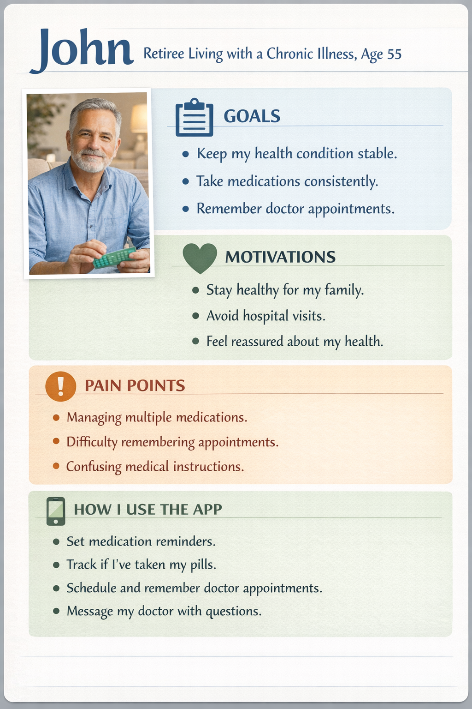
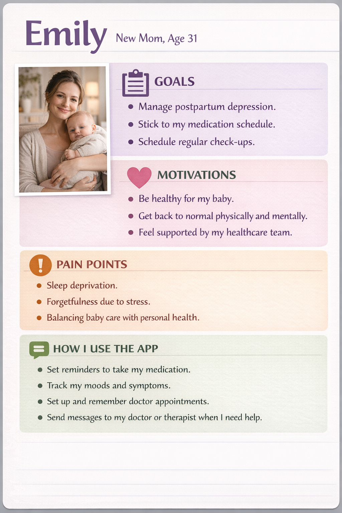
User Journey
User journey maps show how each persona experiences key stages of health management and how VitaSync supports thoughts, actions, and emotions across the flow.
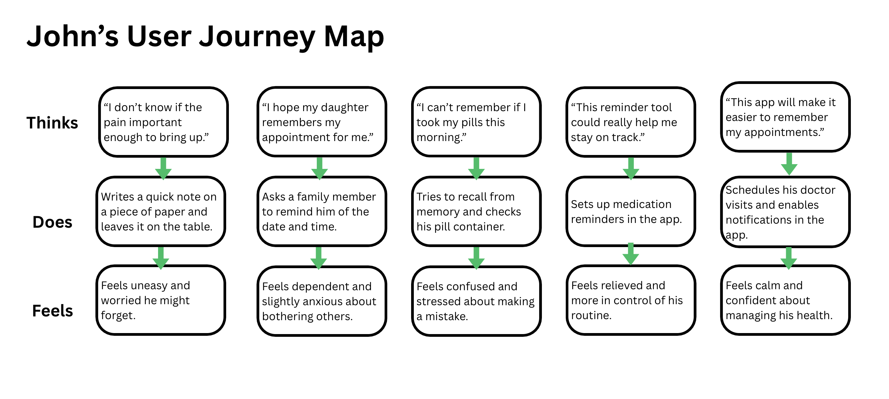
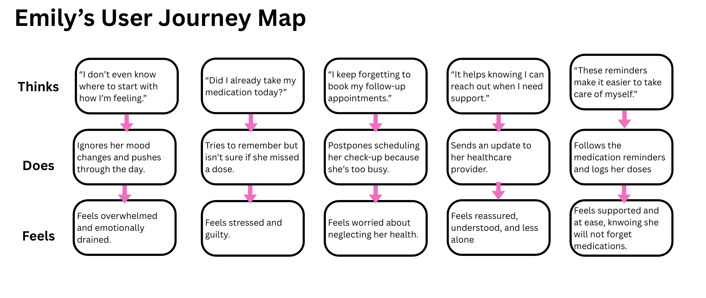
User Flow Chart/Navigation
The user flow outlines how users move from login/onboarding to the main features: medications, doctors, scheduling, messaging, and profile.
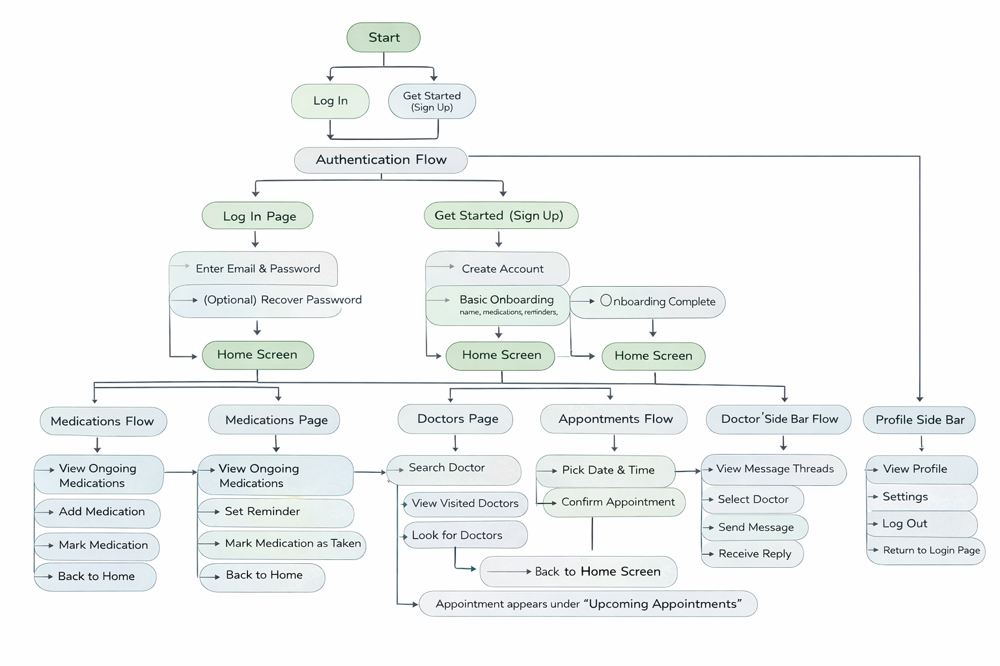
Sketches
Early sketches helped explore layout and navigation patterns before moving into wireframes.

Wireframes
Wireframes provided a low-fidelity structure of VitaSync, helping focus on hierarchy, functionality, and navigation without getting distracted by visual styling too early.
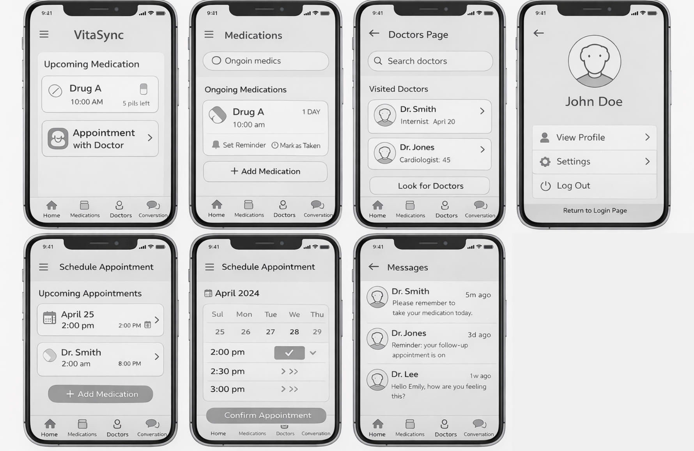
Storyboard
A storyboard illustrates VitaSync in a real-world context, showing how reminders support a user’s routine and reduce missed medication events.
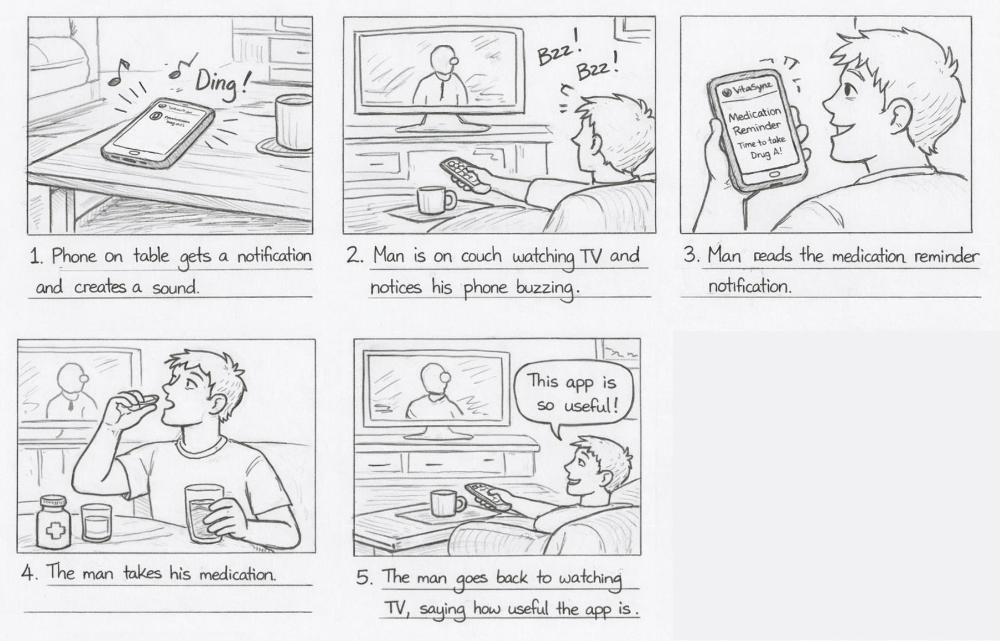
Inspiration Board
The inspiration board guided the visual direction by reviewing patterns from existing health and wellness apps (layout, typography, tone, and color usage).
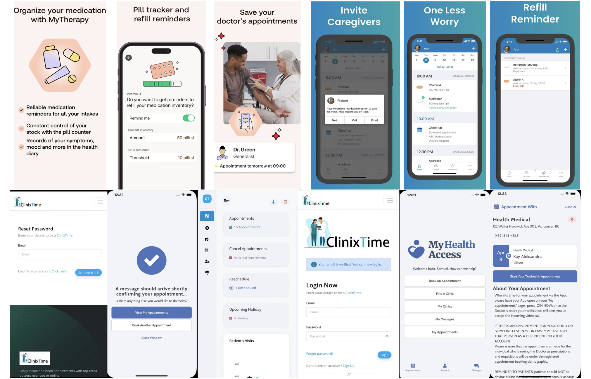
Iteration
Iteration helped refine the layout and flows to reduce friction, improve clarity, and keep the experience calm and supportive.
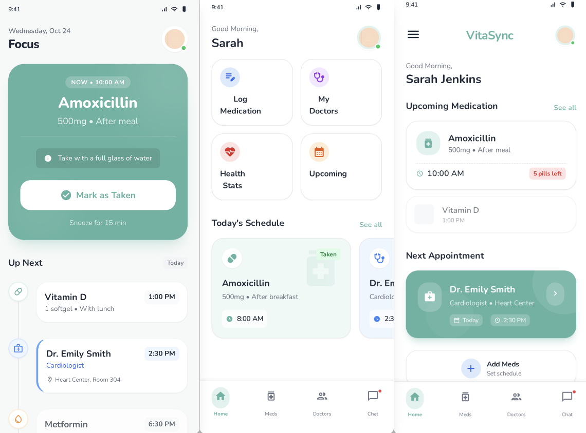
Color Palette
VitaSync uses calm green tones associated with health, reassurance, and balance. Soft mint backgrounds and off-white surfaces keep the interface clean and approachable while allowing key information to stand out.
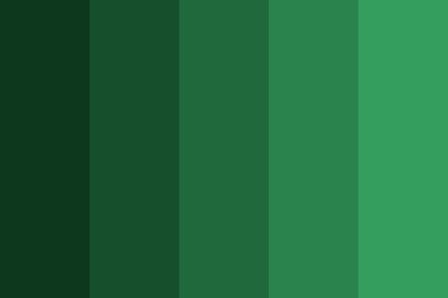
Typography
Inter is selected for clarity and readability in mobile interfaces. Using a single font family maintains consistency and supports a clean, accessible experience.
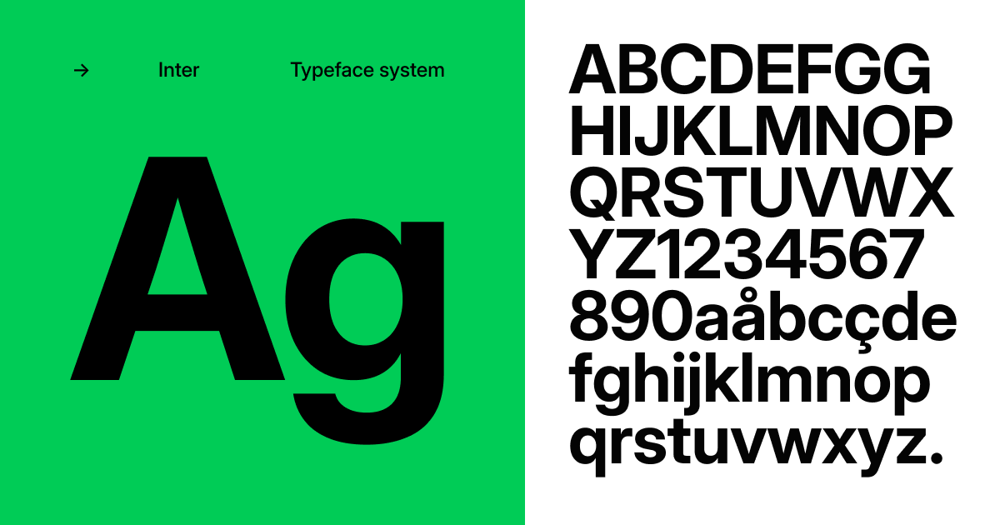
Clickable Prototype/App Navigation
Prototype link: https://www.figma.com/proto/sk4eSqJU5a1o3MABBcljaG/Untitled?node-id=0-1&t=qkjAz37iH4ryCpvj-1
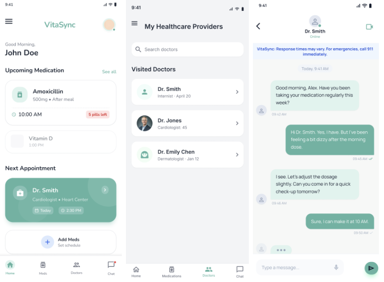
Usability Testing
To evaluate VitaSync, I would conduct a moderated usability test with 5–7 participants who manage medications or regular appointments. Tasks include adding a medication, setting a reminder, checking an upcoming appointment, and sending a message. Feedback would be collected through observation, task success rates, and short interviews. I would analyze recurring points of confusion and iterate by improving navigation labels, simplifying layouts, and refining the interaction flow.
Reflection
Designing VitaSync reinforced the importance of user-centered decisions, especially for health-related tools. Personas, journeys, wireframes, and storyboards helped keep the experience focused on clarity, accessibility, and emotional comfort for users managing chronic conditions.
Conclusion
VitaSync is designed as a supportive digital companion that helps users manage medications, appointments, and communication with healthcare professionals in a more organized way. Grounded in research and real-life scenarios, the app addresses missed doses, forgotten appointments, and fragmented tools while promoting a calm, reassuring user experience.
References
- Pew Research Center. (2010, March 24). Adults living with chronic disease. https://www.pewresearch.org/internet/2010/03/24/adults-living-with-chronic-disease/
- ResearchGate. (n.d.). Figure: The pie chart showing the percentage of commonly used drugs by self-medicators. https://www.researchgate.net/figure/Figure-The-pi-chart-showing-the-percentage-of-commonly-used-drugs-by-self-medicators_fig4_384149332
- Canadian Institutes of Health Research. (n.d.). Chronic disease and health research. https://cihr-irsc.gc.ca/e/43625.html
- Canva. (n.d.). Canva (Version web) [Design tool]. https://www.canva.com/
- Figma, Inc. (n.d.). Figma (Version web) [Design and prototyping tool]. https://www.figma.com/